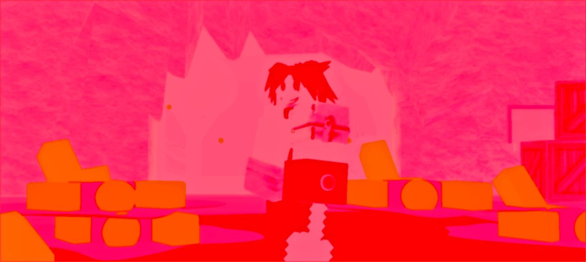
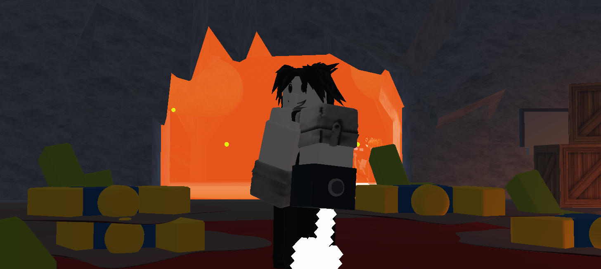

Appearance
His serious face is replaced by a smile, reminiscent of the 'Winning Smile' face. The Smiling Soldier was inspired by the game Infectious Smile. His depiction shows the Smiling Soldier making a 'Shhh...' gesture. The place where he is looks like the safe zone for humans in Infectious Smile, with several bodies scattered on the ground, and his knife has been replaced by a compass with a white axe. His outfit is a white suit with black pants and shoes. The Smiling Soldier is a smiling version of the Lost Soldier.
Smiling Nightmare
Gallery

Full Render

Full Render Without Filters